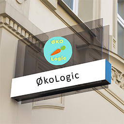

Om os

Hos ØkoLogic finder du alle de økologiske produkter du skal bruge i hverdagens madlavning. Hos os har vi kvalitetskontrol, og vores produkter kommer kun fra lokale godkendte leverandører.
Hos ØkoLogic finder du alle de økologiske produkter du skal bruge i hverdagens madlavning. Hos os har vi kvalitetskontrol, og vores produkter kommer kun fra lokale godkendte leverandører.